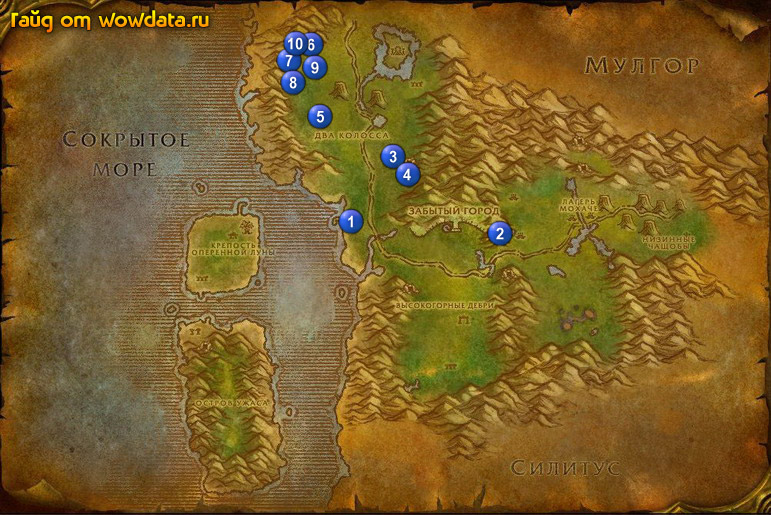

1) Сделайте Крепость оперенной Луны своим домом.
2) В двухэтажном домике закончите <Возвращение к Троясу>, начните <Посох равноденствия>.
3) Начните <Затонувший храм> рядом с ним.
4) Плывите на корабле на материк в док.
5) Рядом с доком начните <Ликвидация великанов> и <Новая энергия для уменьшения> 1 (45, 43).
6) Поставте [Ультрасжиматель Зорбина] на горячую клавишу. Затем идите на юг где начинаются гиганты (они и под водой есть) для <Ликвидация великанов> - обрабатывайте их [Ультрасжиматель Зорбина] и убивайте, так же бейте Морской элементаль и Морской вал для <Новая энергия для уменьшения>.
7) Вернитесь назад и закончите оба квеста. Можете выполнить еще раз но не стоит.
8) Бегите в 2 (65, 45) и начните <Бездомный сиротка>.
9) В точке 3 (51, 31) бейте медведей и горилл, пока вы не соберете по 3 печени для <Калимдорский коктейль>.
10) Бейте Йети из пещеры Бешеного оврага тут 4 (у пещеры) для <Борьба за качество>. Если выпадет [Безупречная шкура йети] то начните квест <Безупречная шкура йети>.
11) Идите к Камнедробитель 5 (42, 22) начните <Великан-опекун>.
12) Делайте <Посох равноденствия>. ( 6 - 40,9; 7 - 38,12; 8 - 38,16; 9 - 41,13 и посередине между всеми - 39,13). Когда соберете все 4 пламени, то идите к и используйте около него [Посох Трояса], затем используйте монолит и закончите квест и начните <Завтрашний камень>.
13) Закончите <Великан-опекун> 10 (38, 10) начните <Шай-бродяжница>. (Эскорт, зачистите дорогу заранее).
12) Закончите <Шай-бродяжница> 5 (42, 21).
13) Вернитесь в Крепость оперенной Луны.
14) Закончите <Безупречная шкура йети> и <Борьба за качество>.
15) Закончите <Завтрашний камень> в 2-ух этажном домике.
16) У вас должно быть примерно 70% на следующий лвл.
17) Отправляйтесь в Прибамбасск.